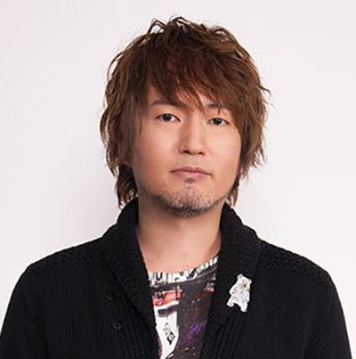
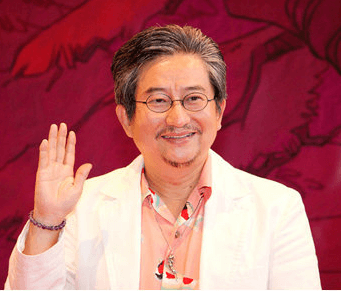
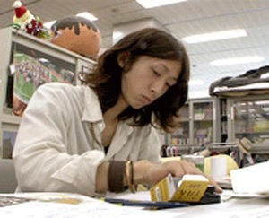
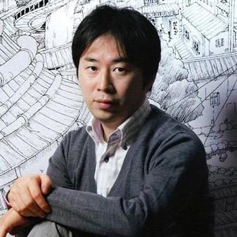
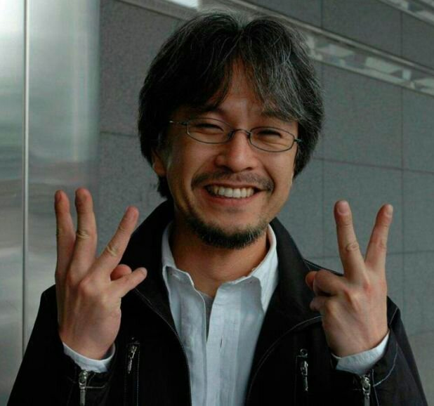
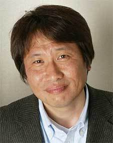

<!DOCTYPE html>
<html lang="en">

<head>
    <meta charset="UTF-8">
    <meta http-equiv="X-UA-Compatible" content="IE=edge">
    <meta name="viewport" content="width=device-width, initial-scale=1.0">
    <title>Document</title>
</head>

<body>

</body>

</html>
<html lang="en">

<head>
    <meta charset="UTF-8">
    <meta http-equiv="X-UA-Compatible" content="IE=edge">
    <meta name="viewport" content="width=device-width, initial-scale=1.0">
    <link rel="stylesheet" href="css_general.css">
    <title>Manga4All</title>
</head>

<body>
    <header>
        <div id="logo">
            <a href="../HTML/Accueil_v2.html"></a>
        </div>
        <div id="navigation">
            <nav>
                <ul id="barreNav">
                    <li><a href="../HTML/Séries.html" target="_blank">Séries</a></li>
                    <!--
                        <ul class="sous_liste">
                            <li>Bleach</li>
                            <li>Dragon Ball</li>
                            <li>My Hero Academia</li>
                            <li>Naruto</li>
                            <li>One Piece</li>
                            <li>Saint Seiya</li>
                        </ul>
                    -->
                    <li><a href="../HTML/Auteurs.html" target="_blank">Auteurs</a></li>
                    <!--
                    <ul class="sous_liste">
                        <li>Akira Toriyama</li>
                        <li>Eiichiro Oda</li>
                        <li>Kôhei Horikoshi</li>
                        <li>Masami Kurumada</li>
                        <li>Masashi Kishimoto</li>
                        <li>Tite Kubo</li>
                    </ul>
                -->
                <li><a href="../HTML/Editions.html" target="_blank">Editions</a></li>
                    <!--
                    <ul class="sous_liste">
                        <li><a href="https://www.glenat.com/" target="_blank">Glénat</a></li>
                        <li><a href="https://www.kana.fr/" target="_blank">Kana</a></li>
                    </ul>
                -->
                    <li><a href="mailto:d.weishar@427hotmail.fr">Contact</a></li>
                </ul>
            </nav>
        </div>
    </header>
    <!--barre de recherche-->
    <div id="barre_recherche">
        <input type="search" id="barre_recherche" name="barre_recherche" placeholder="Rechercher">
        
    </div>
    <!-- article par auteurs-->
    <div class="container">
        <article>
            <a href="https://fr.wikipedia.org/wiki/Tite_Kubo"></a>
            <h1>Tite Kubo</h1>
            <p>Auteur de:
            <ul>
                <li>Zombiepowder (1999-2000)</li>
                <li>Bleach (2001-20016)</li>
                <li>Burn The Witch (2020)</li>
            </ul>
            </p>
            <p>Pour trouver la bonne occasion, c'est par ici</p>
        </article>
        <article>
            <a href="https://fr.wikipedia.org/wiki/Akira_Toriyama"></a>
            <h1>Akira Toriyama</h1>
            <p>Auteur de:
            <ul>
                <li>Dr Slump (1980-1984)</li>
                <li>L'Apprenti mangaka (1982-1984)</li>
                <li>Dragon Ball (1984-1995)</li>
                <li>Neko Majin (1999-2005)</li>
                <li>Jaco the Galactic Patrolman (2013)</li>
                <li>Dargon Ball Super (scénario et concept original, 2015-en cours)</li>
            </ul>
            </p>
            <p>Pour trouver la bonne occasion, c'est par ici</p>
        </article>
        <article>
            <a href="https://fr.wikipedia.org/wiki/K%C5%8Dhei_Horikoshi"></a>
            <h1>Kôhei Horikoshi</h1>
            <p>Auteur de:
            <ul>
                <li>Crazy Zoo (2010-2011)</li>
                <li>My Hero Academia (2014-en cours)</li>
            </ul>
            <p>Pour trouver la bonne occasion, c'est par ici</p>
            </p>
        </article>
        <article>
            <a href="https://fr.wikipedia.org/wiki/Masashi_Kishimoto"></a>
            <h1>Masashi Kishimoto</h1>
            <p>Auteur de:
            <ul>
                <li>Naruto (1999-2014)</li>
            </ul>
            </p>
            <p>Pour trouver la bonne occasion, c'est par ici</p>
        </article>
        <article>
            <a href="https://fr.wikipedia.org/wiki/Eiichir%C5%8D_Oda"></a>
            <h1>Eiichiro Oda</h1>
            <p>Auteur de:
            <ul>
                <li>Wanted! Recueil d'histoires courtes (1992-1998)</li>
                <li>One Piece (1997-en cours)</li>
            </ul>
            </p>
            <p>Pour trouver la bonne occasion, c'est par ici</p>
        </article>
        <article>
            <a href="https://fr.wikipedia.org/wiki/Masami_Kurumada"></a>
            <h1>Masami Kurumada</h1>
            <p>Auteur de:
            <ul>
                <li>Ring Ni Kakero (1977-1981)</li>
                <li>Fuma No Kojiro (1982-1983)</li>
                <li>Saint Seiya (1986-1990)</li>
                <li>B't X (1994-2000)</li>
                <li>Saint Seiya: Next Dimension (2006-en cours)</li>
            </ul>
            </p>
            <p>Pour trouver la bonne occasion, c'est par ici</p>
        </article>
    </div>
</body>

</html>